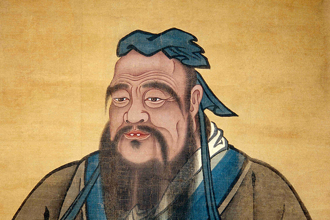
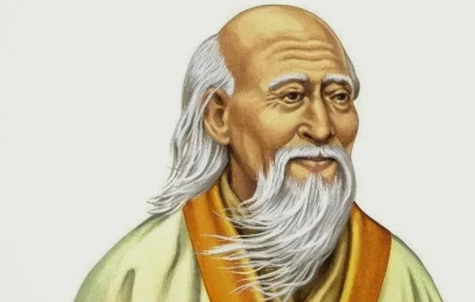
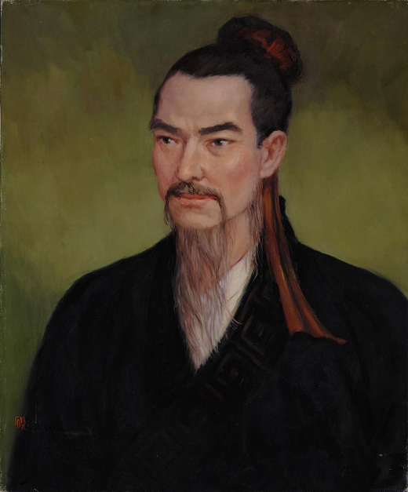
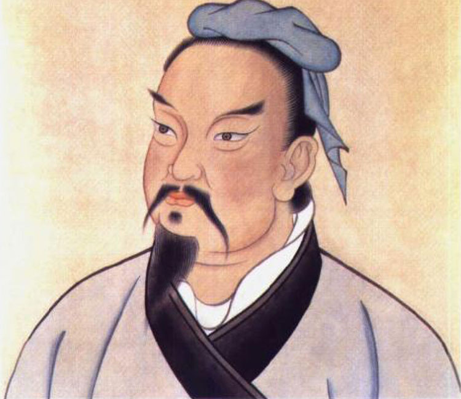
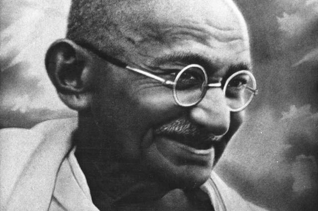
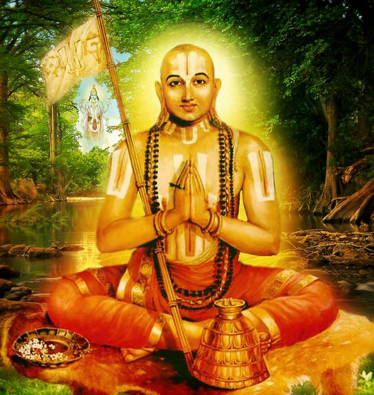
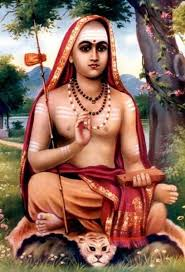

Конфу́ций— древний мыслитель и философ Китая. Его учение оказало глубокое влияние на жизнь Китая и Восточной Азии, став основой философской системы, известной как конфуцианство. Конфуций основал первый университет и систематизировал летописи, составленные в разных княжествах. Учение Конфуция о правилах поведения князей, чиновников, воинов и крестьян распространялось в Китае так же широко, как учение Будды в Индии. Настоящее имя — Кун Цю, но в литературе часто именуется Кун-цзы, Кун Фу-Цзы («учитель Кун») или просто Цзы — «Учитель». Уже в возрасте немногим более 20 лет он прославился как первый профессиональный педагог Поднебесной.
До победы легизма школа Конфуция была только одним из многих направлений в интеллектуальной жизни Воюющих Царств, в период, известный под названием Сто школ. И только после падения Цинь возрождённое конфуцианство достигло статуса государственной идеологии, который сохранился до начала XX века, лишь временно уступая место буддизму и даосизму. Это привело к возвеличиванию фигуры Конфуция и включению его в религиозный пантеон.

Лао-цзы— древнекитайский философ VI-V веков до н. э., которому приписывается авторство классического даосского философского трактата «Дао Дэ Цзин». В рамках современной исторической науки историчность Лао-цзы подвергается сомнению, тем не менее в научной литературе он часто всё равно определяется как основоположник даосизма. В религиозно-философском учении большинства даосских школ Лао-цзы традиционно почитается как божество — один из Трёх Чистых.

Мо-Цзы— древнекитайский философ, разработавший учение о всеобщей, беспристрастной любви и государственном консеквенциализме. Религиозная форма этого учения — моизм — на протяжении нескольких столетий соперничала по популярности с конфуцианством, пока принятие последнего в качестве государственной идеологии Ханьской империи не привело к вытеснению прочих философских доктрин.
Политические, нравственные и религиозные идеи Мо-цзы нашли отражение в одноимённом труде, составленном его учениками. Основные темы его следующие: всеобщая любовь друг к другу, необходимость отказа от завоевательных войн, восхваление добродетели, экономия в тратах, сдержанность при похоронах, соблюдение воли небес, бессмысленность занятий музыкой и критика фатализма.

Сунь-цзы — китайский стратег и мыслитель, живший в VI веке до н. э. Автор знаменитого трактата о военной стратегии «Искусство войны».
Сунь Цзы считал войну вынужденным злом, которое следует избегать, как только возможно. Он отмечает, что «война — это как огонь, люди, которые не сложат оружия, погибнут от собственного же оружия». Войну следует вести быстро во избежание экономических потерь: «Ни одна долгая война не принесла прибыли стране: 100 побед в 100 сражениях — это просто смешно. Каждый, кто отличился сокрушением врагов, получал победу ещё до того, как вражеская угроза становилась реальной». Согласно книге, следует избегать резни и зверств, потому что это может спровоцировать сопротивление и дать противнику возможность обратить войну в свою пользу.

Махатма Ганди— индийский политический и общественный деятель, один из руководителей и идеологов движения за независимость Индии от Великобритании. Его философия ненасилия (сатьяграха) оказала влияние на движения сторонников мирных перемен.
Джордж Оруэлл в 1949 году, в целом позитивно отзываясь о Ганди, в особенности о его интеллектуальной честности, указал, что стремление Ганди к «святости» можно рассматривать как антигуманное (готовность пожертвовать жизнью близких, но не отказаться от вегетарианства; идея о том, что не надо стремиться любить родных или друзей слишком сильно, чтобы не быть зависимыми от них).

Раману́джа— вайшнавский философ и теолог, основатель и главный представитель школы вишишта-адвайта-веданта. В трудах Рамануджи получили полную реализацию и систематизацию задачи синтеза философии веданты и вайшнавской теологии, поставленные его предшественниками Ямуначарьей и Натхамуни. Среди основных заслуг Рамануджи выделяется составление комментариев к «тройственной основе» веданты, в которых были разработаны и обоснованы положения вишишта-адвайты. Он также известен как ачарья (учитель) и выдающийся проповедник, оказавший влияние на движение бхакти.
Рамануджа родился в семье тамильских брахманов в деревне, располагавшейся на территории современного штата Тамилнад. Он принял в качестве гуру Ядава Пракашу, принадлежавшего к традиции адвайта-веданты, но позднее разошёлся с ним во взглядах и стал последователем учения вайшнавских святых-мистиков альваров — Натхамуни и Ямуначарьи. Философия вишишта-адвайты Рамануджи получила своё дальнейшее развитие в двайте — теистическом дуализме Мадхвы, и наряду с адвайта-ведантой Шанкары выделилась как одна из трёх наиболее влиятельных ведантических философских школ II тысячелетия. Рамануджа утвердил эпистемическое и сотериологическое значение бхакти, или преданности личностному божеству (в случае с Рамануджей — Вишну), как средство духовного освобождения (мокши). Он постулировал наличие множественности и различия между Атманом и Брахманом, в то же время не отрицая множественности индивидуальных душ и их способности осознать своё единство с Брахманом.

Гаудапа́да —индийский мыслитель, один из главных представителей древнейшей философской школы Индии Санкхья («система чисел»), имевшей дуалистический характер и противополагавшей самостоятельный и независимый дух никем не осознанной, предвечной материи, не имеющей с духом ничего общего[1]. Положения философского учения Санкхья (основанного мудрецом Капила) изложены Гаудападой в различных «Упанишадах». Считается основателем нового философско-религиозного направления в индуизме, получившего название адвайта-веданта.
Большая часть «Мандукьи-упанишады» принадлежит Гаудападе. Эта часть под заглавием «Агамашастрам» («научный учебник») комментирована Шанкарой. Гаудападе принадлежит также комментарий к Нарасимхатапани-упанишаде, в котором он прославляет Вишну в его второй аватаре.